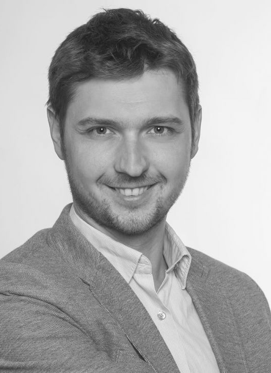

Mirza Pojskić
Neurosurgery
Philips University Marburg
Biography
PD Dr.med. Mirza Pojskic was born in 1986, in Zenica, Bosnia and Herzegovina. He graduated from the Faculty of Medicine at the University of Sarajevo. Since January 2013, he has been working at the Department of Neurosurgery, University Hospital Marburg in Germany. He completed his specialist training as a neurosurgeon in January 2018 under the supervision of Prof. Dr. Christopher Nimsky. Doctoral thesis/MD thesis at Philipps University in Marburg in 2017 on the topic of reconstruction of the cervical spine with expandable cervical spine implants. Since 2019, senior neurosurgeon at the Department for Neurosurgery in Marburg. Subspecialization in neurosurgical intensive care medicine. Fellow of the European Board of Neurosurgical Societies (FEBNS) and member of the examination board for the European board examination in neurosurgery. Habilitation at the University of Marburg in 2023 on application of modern technologies for instrumentation of the spine and elected as Privatdozent/Assistant Professor in August 2023. Holder of the Master's Certificate of the German Spine Society (DWG Masterzertifikat). Since 2021, member of the Spine Committee of the World Federation of Neurosurgical Societies (WFNS), where he is involved in the development of guidelines for treatment of lumbar herniated disc disease, spine metastases and primary spinal tumors. In 2022, he organized the first congress and course of the World Federation for Young Neurosurgeons in Africa in Ivory Coast and participated in subsequent courses of the same spectrum in Bolivia and Congo. Currently involved in development of spine centers in Bosnia and Herzegovina. Neurosurgery fellowship at the Semmes Murphey Clinic in Memphis with Prof. Kenan Arnautovic and AO Spine Fellowship at the ROH Orthopedic Clinic for Spine Surgery in Birmingham, UK. Strong clinical and research focus on application of modern technologies in spine surgery, such as neuronavigation with use of intraoperative imaging, microscope-based augmented reality and robotics in spine and skull base surgery. Guest professor at Faculty of medicine, University Sarajevo. Board member of BHÄG (Association of doctors from Bosnia and Herzegovina in Germany) and member of Bosnian-Herzegovinian American Academy of Arts and Sciences (BHAAAS). In BHÄG/BHAAAS cooperation launched an intership program for medical students from Bosnia and Herzegovina.